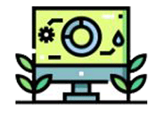
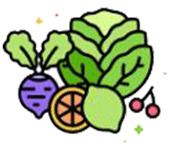

-
센터소개
기술 목적을 추구하는 단체
-

농업기술정보
농사 관련 정보 제공
-

상주특산물
친환경 비옥한 토지의 쌀
-
농업인교육
농기계 및 농업인 교육
상주시 농업기술센터 소식
상주시 농업기술센터 현황
농업 관련정보 및 귀농귀촌 정보를 알려드립니다.

상담실
연수구 사회지원센터에 궁금한 점을 물어보세요.

공지사항
2023년도 상주시 농업기술센터
현항공지
2023.11.01
농업인 및 귀농귀촌인
교육사업안내
2023.11.01
더보기